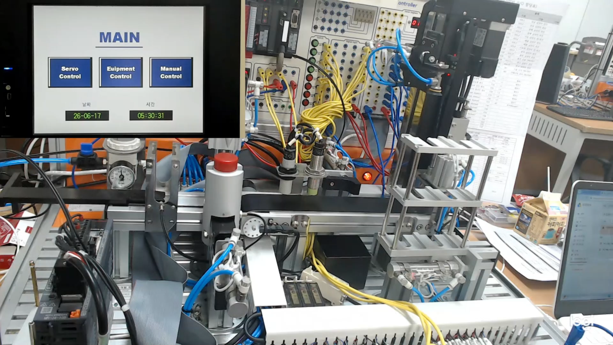
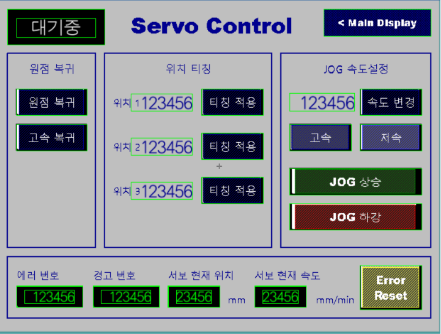
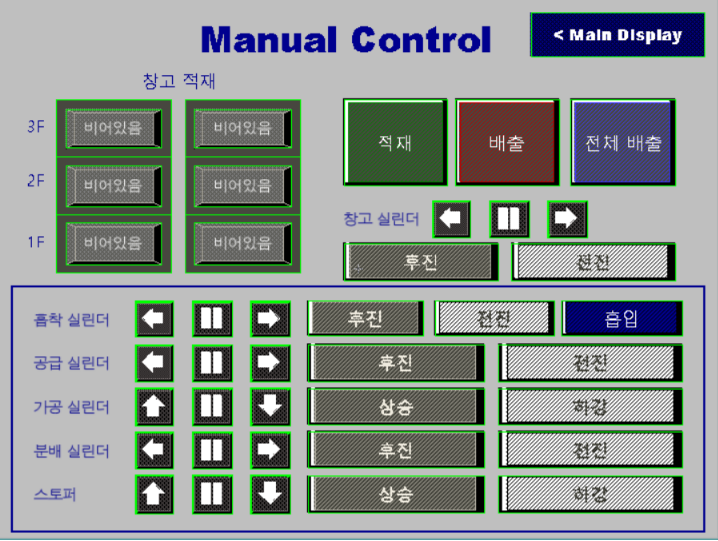

OVERVIEW
프로젝트 요약
유도형 근접센서로 금속·비금속을 구분해 창고에 적재 및 배출하는 PLC 자동화 시스템입니다. 재료 투입·가공·분류·적재·배출 시퀀스와 비상정지 기능을 구현했습니다.
담당 역할
- 공정 시퀀스 구현
- 재료 투입·가공, 금속·비금속 분류 및 적재·배출
- 안전 제어 구현
- 비상정지·인터록·자가유지 로직 구현
- HMI 작화·연동
- 공정 조작, 적재 현황·작업 수량을 표시하는 HMI 화면 구성 및 PLC 연동
DEMONSTRATION
프로젝트 시연
PLC 비상정지 동작 시연
SYSTEM
시스템 구성 및 동작 흐름

- 재료 투입·가공
- 금속·비금속 판별
- 창고 적재·배출 제어
HMI 작화



01 / PLC / 공정 흐름
공정 순서와 조작·상태 화면 연결
- 문제·요구사항
- 재료를 투입·가공한 뒤 유도형 근접센서로 금속·비금속을 구분하고, 두 종류 모두 창고에 적재하며 배출 동작도 제어해야 했습니다.
- 판단·구현
- PLC 래더에서 센서 입력과 공정 단계에 따라 동작 조건을 구성하고, 금속·비금속 판별과 창고 적재·배출 시퀀스를 구현했습니다. 비상정지·인터록·자가유지 로직을 적용하고 HMI에서 공정을 조작하고 상태를 확인하도록 구성했습니다.
- 확인한 결과
- 유도형 근접센서 판별에 따른 창고 적재·배출 공정과 비상정지 동작을 구현했습니다.